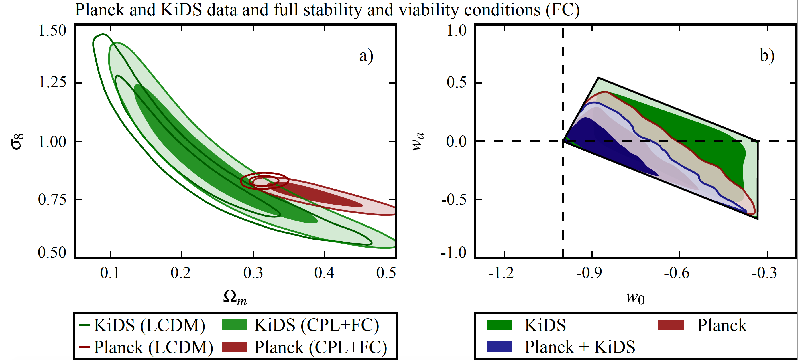

Testing gravity with EFTCAMB
Phenomenology of the generalized cubic covariant Galileon model and cosmological bounds
by Noemi Frusciante, Simone Peirone, Luis Atayde, Antonio De Felice
We investigate the generalized cubic covariant Galileon model, a kinetically driven dark energy model
within the Horndeski class of theories. The model extends the cubic covariant Galileon by including
power laws of the field derivatives in the K-essence and cubic terms which still allow for tracker
solutions. We study the shape of the viable parameter space by enforcing stability conditions which
include the absence of ghost, gradient and tachyon instabilities and the avoidance of strong coupling
at early time. We study here the relevant effects of the modifications induced by the model on some
cosmological observables such as the cosmic microwave background (CMB), the lensing potential
auto-correlation and the matter power spectrum. For this goal, we perform parameter estimation using
data of CMB temperature and polarization, baryonic acoustic oscillations (BAO), redshift-space
distortions (RSD), supernovae type Ia (SNIa) and Cepheids. Data analysis with CMB alone finds that
the today's Hubble parameter H0 is consistent with its determination from Cepheids at 1σ, resolving
the famous tension of the cosmological standard models. The joint analysis of CMB, BAO, RSD and SNIa
sets a lower bound for the sum of neutrino masses which is Σmν>0.11 eV at 1σ, in addition to the usual
upper limit. The model selection analysis based on the effective χ2eff and
Deviance Information Criterion is not able to clearly identify the statistically favored model
between ΛCDM and the generalized cubic covariant Galileon, from which we conclude that the latter
model deserves further studies.
Cosmological constraints and phenomenology of a beyond-Horndeski model
by Simone Peirone, Giampaolo Benevento, Noemi Frusciante, Shinji Tsujikawa
We study observational constraints on a specific dark energy model in the framework of Gleyzes-Langlois-Piazza-Vernizzi
theories, which extends the Galileon ghost condensate (GGC) to the domain of beyond Horndeski theories.
In this model, we show that the Planck cosmic microwave background (CMB) data, combined with datasets
of baryon acoustic oscillations, supernovae type Ia, and redshift-space distortions, give the tight
upper bound |α(0)H|≤O(10) on today's beyond-Horndeski (BH)
parameter αH. This is mostly attributed to the shift of CMB acoustic peaks induced by the
early-time changes of cosmological background and perturbations arising from the dominance of
αH in the dark energy density. In comparison to the Λ-cold-dark-matter (ΛCDM) model,
our BH model suppresses the large-scale integrated-Sachs-Wolfe (ISW) tail of CMB temperature
anisotropies due to the existence of cubic Galileons, and it modifies the small-scale CMB power
spectrum because of the different background evolution. We find that the BH model considered fits
the data better than ΛCDM according to the χ2 statistics, yet the deviance information
criterion (DIC) slightly favors the latter. Given the fact that our BH model with αH=0 (i.e., the
GGC model) is favored over ΛCDM even by the DIC, there are no particular signatures for the departure
from Horndeski theories in current observations.
Cosmological data favor Galileon ghost condensate over ΛCDM
by Simone Peirone, Giampaolo Benevento, Noemi Frusciante, Shinji Tsujikawa
We place observational constraints on the Galileon ghost condensate model, a dark energy proposal in
cubic-order Horndeski theories consistent with the gravitational-wave event GW170817. The model extends
the covariant Galileon by taking an additional higher-order field derivative X2 into account. This
allows for the dark energy equation of state wDE to access the region −2< wDE <−1 without ghosts. Indeed,
this peculiar evolution of wDE is favored over that of the cosmological constant Λ from the joint data
analysis of cosmic microwave background (CMB) radiation, baryonic acoustic oscillations (BAOs),
supernovae type Ia (SNIa) and redshift-space distortions (RSDs). Furthermore, our model exhibits a
better compatibility with the CMB data over the Λ-cold-dark-matter (ΛCDM) model by suppressing
large-scale temperature anisotropies. The CMB temperature and polarization data lead to an estimation
for today's Hubble parameter H0 consistent with its direct measurements at 2σ. We perform a model
selection analysis by using several methods and find a statistically significant preference of the
Galileon ghost condensate model over ΛCDM.

Cosmology of surviving Horndeski theory: The road ahead
by Noemi Frusciante, Simone Peirone, Santiago Casas, Nelson A. Lima
In the context of the effective field theory of dark energy (EFT) we perform agnostic explorations of
Horndeski gravity. We choose two parametrizations for the free EFT functions, namely a power law and a
dark energy density-like behaviour on a non trivial Chevallier-Polarski-Linder background. We restrict
our analysis to those EFT functions which do not modify the speed of propagation of gravitational
waves. Among those, we prove that one specific function cannot be constrained by data, since its
contribution to the observables is below the cosmic variance, although we show it has a relevant
role in defining the viable parameter space. We place constraints on the parameters of these models
combining measurements from present day cosmological datasets and we prove that the next generation
galaxy surveys can improve such constraints by one order of magnitude. We then verify the validity of
the quasi-static limit within the sound horizon of the dark field, by looking at the phenomenological
functions μ and Σ, associated respectively to clustering and lensing potentials. Furthermore, we
notice up to 5% deviations in μ,Σ with respect to General Relativity at scales smaller than the
Compton one. For the chosen parametrizations and in the quasi-static limit, future constraints on μ
and Σ can reach the 1% level and will allow us to discriminate between certain models at more than 3σ,
provided the present best-fit values remain.
The role of the tachyonic instability in Horndeski gravity
by Noemi Frusciante, Georgios Papadomanolakis, Simone Peirone, Alessandra Silvestri
The tachyonic instability is associated with the unboundedness of the Hamiltonian from below and
results in an unstable low-k regime. In the cosmological exploration of modified gravity, it is
seldom taken into account, with more focus given to the popular no-ghost and no-gradient conditions.
The latter though are intrinsically high-k statements. Here we combine all three conditions into a
full set of requirements that we show to guarantee stability on the whole range of cosmological
scales. We then explore the impact of the different conditions on the parameter space of scalar-tensor
gravity, with particular emphasis on the no-tachyon one. We focus on Horndeski gravity and also
consider separately the two subclasses of f(R) and Generalized Brans Dicke theories. We identify
several interesting features, for instance in the parameter space of designer f(R) on a wCDM
background, shedding light on previous findings. When looking at the phenomenological functions Σ
and μ, associated to the weak lensing and clustering potential respectively, we find that in the
case of Generalized Brans Dicke the no-tachyon condition clearly cuts models with μ,Σ>1. This effect
is less prevalent in the Horndeski case due to the larger amount of free functions in the theory.

Do current cosmological observations rule out all Covariant Galileons?
by Simone Peirone, Noemi Frusciante, Bin Hu, Marco Raveri, Alessandra Silvestri
We revisit the cosmology of Covariant Galileon gravity in view of the most recent cosmological data sets,
including weak lensing. As a higher derivative theory, Covariant Galileon models do not have a ΛCDM limit
and predict a very different structure formation pattern compared with the standard ΛCDM scenario.
Previous cosmological analyses suggest that this model is marginally disfavoured, yet can not be
completely ruled out. In this work we use a more recent and extended combination of data, and we
allow for more freedom in the cosmology, by including a massive neutrino sector with three different
mass hierarchies. We use the Planck measurements of Cosmic Microwave Background temperature and
polarization; Baryonic Acoustic Oscillations measurements by BOSS DR12; local measurements of H0;
the joint light-curve analysis supernovae sample; and, for the first time, weak gravitational lensing
from the KiDS collaboration. We find, that in order to provide a reasonable fit, a non-zero neutrino
mass is indeed necessary, but we do not report any sizable difference among the three neutrino
hierarchies. Finally, the comparison of the Bayesian Evidence to the ΛCDM one shows that in all the
cases considered, Covariant Galileon models are statistically ruled out by cosmological data.

A comparison of Einstein-Boltzman solvers for testing General Relativity
by E. Bellini, A. Barreira, N. Frusciante, B. Hu, S. Peirone, M. Raveri, M. Zumalacarregui,
A. Avilez-Lopez, M. Ballardini, R. A. Battye, B. Bolliet, E. Calabrese, Y. Dirian,
P. G. Ferreira, F. Finelli, Z. Huang, M. M. Ivanov, J. Lesgourgues, B. Li, N. A. Lima,
F. Pace, D. Paoletti, I. Sawicki, A. Silvestri, C. Skordis, C. Umilta, and F. Vernizzi
We compare Einstein-Boltzmann solvers that include modifications to General Relativity and find that, for a wide range of models and parameters, they agree to a high level of precision.
We look at three general purpose codes that primarily model general scalar-tensor theories, three codes that model Jordan-Brans-Dicke (JBD) gravity, a code that models f(R) gravity,
a code that models covariant Galileons, a code that models Horava-Lifschitz gravity and two codes that model non-local models of gravity.
Comparing predictions of the angular power spectrum of the cosmic microwave background and the power spectrum of dark matter for a suite of different models, we find agreement at the sub-percent level.
This means that this suite of Einstein-Boltzmann solvers is now sufficiently accurate for precision constraints on cosmological and gravitational parameters.
A note on the initial conditions within the effective field theory approach of cosmic acceleration
by Xue-Wen Liu, Bin Hu, Yi Zhang
By using the effective field theory approach, we investigate the role of initial condition for the dark energy or modified gravity models. In details, we consider the constant and linear parametrization of the effective Newton constant models. Firstly, under the adiabatic assumption, the correction from the extra scalar degree of freedom in the beyond ΛCDM model is found to be negligible. The dominant ingredient in this setup is the primordial curvature perturbation originated from inflation mechanism, and the energy budget of the matter components is not very crucial. Secondly, the iso-curvature perturbation sourced by the extra scalar field is studied. For the constant and linear model of the effective Newton constant, there is no such kind of scalar mode exist. For the quadratic model, there is a non-trivial one. However, the amplitude of the scalar field is damped away very fast on all scales. Consequently, it could not support a reasonable structure formation. Finally, we study the importance of the setup of the scalar field starting time. By setting different turn-on time, namely a=10-2 and a=10-7, we compare the cosmic microwave background radiation temperature, lensing deflection angle auto-correlation function as well as the matter power spectrum in the constant and linear model. We find there is an order of O(1%) difference in the observable spectra for constant model, while for the linear model, it is smaller than O(0.1%).
Priors on the effective Dark Energy equation of state in scalar-tensor theories
by Marco Raveri, Philip Bull, Alessandra Silvestri, Levon Pogosian
Constraining the Dark Energy (DE) equation of state, w, is one of the primary science goals of ongoing and future cosmological surveys. In practice, with imperfect data and incomplete redshift coverage, this requires making assumptions about the evolution of w with redshift z. These assumptions can be manifested in a choice of a specific parametric form, which can potentially bias the outcome, or else one can reconstruct w(z) non-parametrically, by specifying a prior covariance matrix that correlates values of w at different redshifts. In this work, we derive the theoretical prior covariance for the effective DE equation of state predicted by general scalar-tensor theories with second order equations of motion (Horndeski theories). This is achieved by generating a large ensemble of possible scalar-tensor theories using a Monte Carlo methodology, including the application of physical viability conditions. We also separately consider the special sub-case of the minimally coupled scalar field, or quintessence. The prior shows a preference for tracking behaviors in the most general case. Given the covariance matrix, theoretical priors on parameters of any specific parametrization of w(z) can also be readily derived by projection.
Impact of theoretical priors in cosmological analyses:the case of single fi eld quintessence

by Simone Peirone, Matteo Martinelli, Marco Raveri, Alessandra Silvestri
We investigate the impact of general conditions of theoretical stability and cosmological viability on dynamical dark energy models.
As a powerful example, we study whether minimally coupled, single field Quintessence models that are safe from ghost instabilities,
can source the CPL expansion history recently shown to be mildly favored by a combination of CMB (Planck) and Weak Lensing (KiDS) data.
We find that in their most conservative form, the theoretical conditions impact the analysis in such a way that smooth single field
Quintessence becomes significantly disfavored with respect to the standard ΛCDM cosmological model.
This is due to the fact that these conditions cut a significant portion of the (w0,wa) parameter space for CPL,
in particular eliminating the region that would be favored by weak lensing data. Within the scenario of a smooth dynamical
dark energy parametrized with CPL, weak lensing data favors a region that would require multiple fields to ensure gravitational stability.
Testing Hu-Sawicki f(R) gravity with the Effective Field Theory approach
by Bin Hu, Marco Raveri, Matteo Rizzato, Alessandra Silvestri
We show how to fully map a specific model of modified gravity into the Einstein-Boltzmann solver EFTCAMB. This approach consists in few steps and allows to obtain the cosmological phenomenology of a model with minimal effort.
We discuss all these steps, from the solution of the dynamical equations for the cosmological background of the model to the use of the mapping relations to cast the model into the effective field theory language and use the latter to
solve for perturbations. We choose the Hu-Sawicki f(R) model of gravity as our working example. After solving the background and performing the mapping, we interface the algorithm with EFTCAMB and take advantage of the effective field theory framework to integrate the full dynamics of linear perturbations, returning all quantities needed to accurately compare the model with observations. We discuss some observational signatures of this model, focusing
on the linear growth of cosmic structures. In particular we present the behavior of fσ8 and EG that, unlike the ΛCDM scenario, are generally scale dependent in addition to redshift dependent. Finally, we study
the observational implications of the model by comparing its cosmological predictions to the Planck 2015 data, including CMB lensing, the WiggleZ galaxy survey and the CFHTLenS weak lensing survey measurements. We find that while
WiggleZ data favor a non-vanishing value of the Hu-Sawicki model parameter, log10(-f0R) and consequently a large value of $\sigma_8$, CFHTLenS drags the estimate of log10(-f0R) back to the ΛCDM limit.

Horava Gravity in the Effective Field Theory formalism: from cosmology to observational constraints
by Noemi Frusciante, Marco Raveri, Daniele Vernieri, Bin Hu, Alessandra Silvestri
We consider Horava gravity within the framework of the effective field theory (EFT) of dark energy and modified gravity. We work out a complete mapping of the theory into the EFT language for an action including all the operators which are relevant for linear perturbations with up to sixth order spatial derivatives. We then employ an updated version of the EFTCAMB/EFTCosmoMC package to study the cosmology of the low-energy limit of Horava gravity and place constraints on its parameters using several cosmological data sets. In particular we use cosmic microwave background (CMB) temperature-temperature and lensing power spectra by Planck 2013, WMAP low-l polarization spectra, WiggleZ galaxy power spectrum, local Hubble measurements, Supernovae data from SNLS, SDSS and HST and the baryon acoustic oscillations measurements from BOSS, SDSS and 6dFGS. We get improved upper bounds, with respect to those from Big Bang Nucleosynthesis, on the deviation of the cosmological gravitational constant from the local Newtonian one. At the level of the background phenomenology, we find a relevant rescaling of the Hubble rate at all epoch, which has a strong impact on the cosmological observables; at the level of perturbations, we discuss in details all the relevant effects on the observables and find that in general the quasi-static approximation is not safe to describe the evolution of perturbations. Overall we find that the effects of the modifications induced by the low-energy Horava gravity action are quite dramatic and current data place tight bounds on the theory parameters.
Planck 2015 results. XIV. Dark energy and modified gravity
by Planck Collaboration
See Section 5.2.1
We study the implications of Planck data for models of dark energy (DE) and modified gravity (MG), beyond the cosmological constant scenario. We start with cases where the DE only directly affects the background evolution, considering Taylor expansions of the equation of state, principal component analysis and parameterizations related to the potential of a minimally coupled DE scalar field. When estimating the density of DE at early times, we significantly improve present constraints. We then move to general parameterizations of the DE or MG perturbations that encompass both effective field theories and the phenomenology of gravitational potentials in MG models. Lastly, we test a range of specific models, such as k-essence, f(R) theories and coupled DE. In addition to the latest Planck data, for our main analyses we use baryonic acoustic oscillations, type-Ia supernovae and local measurements of the Hubble constant. We further show the impact of measurements of the cosmological perturbations, such as redshift-space distortions and weak gravitational lensing. These additional probes are important tools for testing MG models and for breaking degeneracies that are still present in the combination of Planck and background data sets. All results that include only background parameterizations are in agreement with LCDM. When testing models that also change perturbations (even when the background is fixed to LCDM), some tensions appear in a few scenarios: the maximum one found is ∼ 2 sigma for Planck TT+lowP when parameterizing observables related to the gravitational potentials with a chosen time dependence; the tension increases to at most 3 sigma when external data sets are included. It however disappears when including CMB lensing.
EFTCAMB/EFTCosmoMC: massive neutrinos in dark cosmologies
by Bin Hu, Marco Raveri, Alessandra Silvestri, Noemi Frusciante
We revisit the degeneracy between massive neutrinos and generalized theories of gravity in the framework of effective field theory of cosmic acceleration. In particular we consider f(R) theories and a class of non-minimally coupled models parametrized via a coupling to gravity which is linear in the scale factor. In the former case, we find a slightly lower degeneracy with respect to what found so far in the literature, due to the fact that we implement exact designer f(R) models and evolve the full linear dynamics of perturbations. As a consequence, our bounds are slightly tighter on the f(R) parameter but looser on the summed neutrino mass. We also set a new upper bound on the Compton wavelength parameter Log10B0 <-4.1 at 95% C.L. with fixed summed neutrino mass ( Σ mν=0.06 eV) in f(R) gravity with the combined data sets from cosmic microwave background temperature and lensing power spectra of Planck collaboration as well as galaxy power spectrum from WiggleZ dark energy survey. We do not observe a sizable degeneracy between massive neutrinos and modified gravity in the linear parametrization of non-minimally gravitational coupling model. The analysis is performed with an updated version of the EFTCAMB/EFTCosmoMC package, which is now publicly available and extends the first version of the code with the consistent inclusion of massive neutrinos, tensor modes, several alternative background histories and designer quintessence models.
EFTCAMB/EFTCosmoMC: Numerical Notes v3.0
by Bin Hu, Marco Raveri, Noemi Frusciante, Alessandra Silvestri
EFTCAMB/EFTCosmoMC are publicly available patches to the CAMB/CosmoMC codes implementing the effective field theory approach to single scalar field dark energy and modified gravity models. With the present numerical notes we provide a guide to the technical details of the code. Moreover we reproduce, as they appear in the code, the complete set of the modified equations and the expressions for all the other relevant quantities used to construct these patches. We submit these notes to the arXiv to grant full and permanent access to this material which provides very useful guidance to the numerical implementation of the EFT framework. We will update this set of notes when relevant modifications to the EFTCAMB/EFTCosmoMC codes will be released. The present version is based on EFTCAMB/EFTCosmoMC XXX17.
Effective Field Theory of Cosmic Acceleration: constraining dark energy with CMB data
by Marco Raveri, Bin Hu, Noemi Frusciante, Alessandra Silvestri
We introduce EFTCAMB/EFTCosmoMC as publicly available patches to the commonly used CAMB/CosmoMC codes. We briefly describe the structure of the codes, their applicability and main features. To illustrate the use of these patches, we obtain constraints on parametrized pure EFT and designer f(R) models, both on ΛCDM and wCDM background expansion histories, using data from Planck temperature and lensing potential spectra, WMAP low-l polarization spectra (WP), and baryon acoustic oscillation (BAO). Upon inspecting theoretical stability of the models on the given background, we find non-trivial parameter spaces that we translate into viability priors. We use different combinations of data sets to show their individual effects on cosmological and model parameters. Our data analysis results show that, depending on the adopted data sets, in the wCDM background case this viability priors could dominate the marginalized posterior distributions. Interestingly, with Planck+WP+BAO+lensing data, in f(R) gravity models, we get very strong constraints on the constant dark energy equation of state, w0∈(-1,-0.9997)(95% CL).
Effective Field Theory of Cosmic Acceleration: an implementation in CAMB
by Bin Hu, Marco Raveri, Noemi Frusciante, Alessandra Silvestri
We implement the effective field theory (EFT) approach to dark energy and modified gravity in the public Einstein-Boltzmann solver CAMB. The resulting code, which we dub EFTCAMB, is a powerful and versatile tool that can be used for several objectives. It can be employed to evolve the full dynamics of linear scalar perturbations in any given single field dark energy or modified gravity model, once the latter is mapped into the EFT formalism. It offers a numerical implementation of EFT as a model-independent framework to test gravity on cosmological scales. EFTCAMB has a built-in check for the fulfillment of general stability conditions such as the absence of ghost and superluminal propagation of perturbations. It handles phantom-divide crossing models and does not contain any quasi-static approximation, but rather evolves the full dynamics of perturbations on linear scales. As we will show, the latter is an important feature in view of the accuracy and scale range of upcoming surveys. We show the reliability and applicability of our code by evolving the dynamics of linear perturbations and extracting predictions for power spectra in several models. In particular we perform a thorough analysis of f(R) theories, comparing our outputs with those of an existing code for LCDM backgrounds, and finding an agreement that can reach 0.1% for models with a Compton wavelength consistent with current cosmological data. We then showcase the flexibility of our code studying two different scenarios. First we produce new results for designer f(R) models with a time-varying dark energy equation of state. Second, we extract predictions for linear observables in some parametrized EFT models with a phantom-divide crossing equation of state for dark energy.